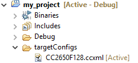

Debugging¶
External Resources¶
Debugging common application problems with TI-RTOS video presentation on training.ti.com.
Code Composer Studio (CCS) User’s Guide and in particular the section dealing with CCS debug environment. More resources (training videos, documentation to run CCS on different OS, tips, etc.) are available here
Debug Interfaces¶
The CC13xx and CC26xx platform supports both the cJTAG and JTAG debug interfaces. Debug probes that support cJTAG, like the TI XDS110 and XDS100v3, can work natively with the CC13xx or CC26xx. Other debug probes that only support JTAG, like the IAR I-Jet and Segger J-Link, need to inject a cJTAG sequence to enable JTAG functionality. The hardware resources included on the devices for debugging are listed as follows. Not all debugging functionality is available in all combinations of debug probe and IDE.
Flash Patch and Breakpoint Unit (FPB) - 6 instruction comparators, 2 literal comparators
Data Watchpoint and Trace Unit (DWT) - 5 watchpoints on memory access
Instrumentation Trace Macrocell (ITM) - 32 x 32 bit stimulus registers
Trace Port Interface Unit (TPIU) - serialization and time-stamping of DWT and ITM events
XDS110 Debug Probe¶
The CC13xx or CC26xx LaunchPad has an on-board XDS110, and this is the assumed debug probe for most development.
The XDS110 is the latest entry level debug probe (emulators) for TI embedded processors. Designed to be a complete solution that delivers JTAG and SWD connectivity at a low cost, the XDS110 is the debug probe of choice for entry-level debugging of TI microcontrollers, processors and SimpleLink devices. Also, both Core Processor and System Trace are available for all Arm and DSP devices that support Embedded Trace Buffer (ETB).
It is possible to buy the XDS110 as a standalone debugger. See the XDS110 JTAG Debug Probe product page.
Configuring Debugger in Code Composer Studio¶
If only one debug probe is attached, CCS will automatically select the connected debug probe when a debug session is started. You can start a debug session by clicking the debug icon on the toolbar.
If more than one debug probe is attached when a debug session is started, CCS will prompt you to select a debug probe as seen in Figure 168. CCS will save the selected debug probe in the target configuration for the project.
Figure 168. CCS Probe Selection¶
To set or change the selected debug probe for a project, it is necessary to set the serial number for the probe in the project’s target configuration.
Find The Serial Number¶
To find the serial number for XDS110 debug probe, open a command prompt and run
the xdsdfu.exe command for your CCS version, e.g.
c:\ti\ccs_7_3_0_00019\ccsv7\ccs_base\common\uscif\xds110\xdsdfu.exe -e.
This will enumerate all the attached XDS110 debug probes. This should result in
output like the following.
C:\>c:\ti\ccs_7_3_0_00019\ccsv7\ccs_base\common\uscif\xds110\xdsdfu.exe -e
USB Device Firmware Upgrade Utility
Copyright (c) 2008-2015 Texas Instruments Incorporated. All rights reserved.
Scanning USB buses for supported XDS110 devices...
<<<< Device 0 >>>>
VID: 0x0451 PID: 0xbef3
Device Name: XDS110 Embed with CMSIS-DAP
Version: 2.3.0.9
Manufacturer: Texas Instruments
Serial Num: L1100017
Mode: Runtime
<<<< Device 1 >>>>
VID: 0x0451 PID: 0xbef3
Device Name: XDS110 Embed with CMSIS-DAP
Version: 2.3.0.9
Manufacturer: Texas Instruments
Serial Num: L11000EN
Mode: Runtime
Found 2 devices.
C:\>
For XDS100 series debug probes, open a command prompt and run the
xds100serial.exe command for your CCS version, e.g. c:\ti\ccs_7_3_0_00019
\ccsv7\ccs_base\common\uscif\xds100serial.exe. This should result in output
like the following:
C:\>c:\ti\ccs_7_3_0_00019\ccsv7\ccs_base\common\uscif\xds100serial.exe
Scanning for XDS100 emulators...
VID/PID Type Serial # Description
0403/a6d1 XDS100v3 06EB12213144 Texas Instruments XDS100v3
C:\>
Configure Serial Number¶
It may be necessary to set or unset the selected debug probe. Use the following steps to do this.
|
 |
|
|
|

|
|

|
Connecting to the XDS Debugger¶
If only one debugger is attached, the IDE uses it automatically when you click the button in CCS or in IAR.
If multiple debuggers are connected, you must choose the individual debugger to use. The following steps detail how to select a debugger in CCS and IAR.
Configuring Debugger in IAR¶
If only one debugger is attached, IAR uses it automatically when you click the button.
If more than one debug probe is connected, use the following steps to have IAR always prompt to select the connection.
Open the project options (
Project→Options)Go to the Debugger entry.
Go to Extra options.
Add the following command line option:
--drv_communication=USB:#select
Breakpoints¶
Comparators in the Flash Patch and Breakpoint Unit (FPB) of the CC13xx or CC26xx LaunchPad are used to break on an instruction fetch. This can be used to patch a function as it is fetched from instruction memory. Or these comparators can be used to supply a Breakpoint (BKPT) instruction to the CPU. These instructions halt the processors operation, waiting for the debug probe.
Considerations¶
While breakpoints are a useful tool for debugging code online, they have the possibility of altering the execution flow of a piece of code.
Breakpoints and Timing¶
Synchronous RF protocols are timing sensitive. Breakpoints can easily halt the execution long enough to lose network timing and break the link.
To still be able to debug, place breakpoints as close as possible to where the relevant debug information can be read or step through the relevant code segment to debug.
After you hit a breakpoint and read out the necessary debug information, it is recommended that you reset the device and re-establish the connection.
Breakpoints and Optimization¶
When compiler optimizations are enabled, toggling a breakpoint on a line of C code may not result in the expected behavior. Some examples include the following.
Code is removed or not compiled in
Toggling a breakpoint in the IDE results in a breakpoint somewhere other than the intended line. Some IDEs disable breakpoints on nonexistent code.
Code block is part of a common subexpression
A breakpoint might be trigged from a function or piece of code near the marked line. This might have been due to the compiler reusing sections.
An if clause is represented by a conditional branch in assembly
A breakpoint inside an if clause always breaks on the conditional statement, even when the condition is not true.
TI recommends selecting an optimization level as low as possible when debugging. See Optimizations for information on modifying optimization levels.
Breakpoints in CCS¶
Note
CCS reserves one hardware breakpoint for instruction stepping.
To toggle a breakpoint, do any of the following.
Double-click the area to the left of the line number.
Press
Ctrl+Shift+B.Right-click on the line.
A breakpoint set on line 207 looks like the following.

Figure 169. Breakpoint on line 207. Debugger halted at start of main().¶
For an overview of the active and inactive breakpoints, click on View
→ Breakpoints.

Figure 170. List of breakpoints. Right-click to edit options, or de-select to deactivate.¶
To set a conditional break, do as follows.
Right-click the breakpoint in the overview.
Choose Properties.
When debugging, Skip Count and Condition can help skip a number of breaks or only break if a variable is a certain value.
Note
Conditional breaks require a debugger response and may halt the processor long enough to break an active RF connection, or otherwise disrupt timing on the debug target.
Breakpoints in IAR¶
Note
IAR reserves one comparator for instruction stepping.
To toggle a breakpoint, do any of the following.
Single-click the area to the left of the line number.
Go to the line and press
F9to toggle breakpointRight-click on the line and select Toggle Breakpoint (Code).
A breakpoint looks like this:

Figure 171. Breakpoint on PIN_init(). Debugger halted at start of main().¶
For an overview of the active and inactive breakpoints, click
View → Breakpoints.

Figure 172. List of breakpoints. Right-click to edit options, or de-select to deactivate.¶
To set a conditional break, do as follows.
Right-click the breakpoint in the overview.
Choose Edit….
When debugging, Skip Count and Condition can help skip a number of breaks or only break if a variable is a certain value.
Note
Conditional breaks require a debugger response and may halt the processor long enough to break an active RF connection, or otherwise disrupt timing on the debug target.
Watching Variables and Registers¶
Debuggers offer several ways of viewing the state of a halted program. Global variables are statically placed during link-time and can end up anywhere in the RAM or Flash of the chip. These variables can be viewed when then target is halted by the debugger through the Watch and Expression windows.
Unless removed due to optimizations, global variables are always available in these views. Local variables or variables that are only valid inside a limited scope are only viewable in that scope. Such variables can also be viewed with the Watch or Expression views, and may also be automatically displayed when breaking or stepping through code.
Considerations¶
Local variables are often placed in CPU registers and not on the stack. These variables also have a limited lifetime even within the scope in which they are valid. Depending on the optimization performed, a variable placed in a register may not have a cohesive view of the current state of the variable. Some possible solutions are:
Move the variable to global scope, so it remains accessible in RAM.
Make the variable volatile, so the compiler doesn’t place the value in a register.
Make a shadow copy of the variable that is global and volatile.
Variables in CCS¶
You can view Global Variables by doing either of the following.
Select
View→Expressions.Select a variable name in code.
Right-click and select Add Watch Expression.
Figure 173. Variable watch window. Note that you can cast values, get address and sizeof, etc.¶
Select
View→Variablestoauto-variablesthat are present at the current location when stepping through code.

Figure 174. Local variables. This screenshot is taken during execution of an application function.¶
Variables in IAR¶
To view Global Variables, do either of the following.
Right-click on the variable.
Select Add to Watch: varName.
Select
View→WatchEnter the name of the variable.

Figure 175. Variable watch window. Note that you can cast values, get address and sizeof, etc.¶
View –> Locals show the local variables in IAR.

Figure 176. Local variables. This screenshot is taken during execution of the Simple Peripheral init function.¶
Note
IAR may remove the variable during optimization and inline the usage of the
value. If so, add the __root directive in front.
Memory Watchpoints¶
As mentioned in Debug Interfaces, the Data Watchpoint and Trace Unit (DWT module) contains four memory watchpoints that allow breakpoints on memory access. The hardware match functionality looks only at the address. If intended for use on a variable, the variable must be statically allocated.
Note
If a data watchpoint with value match is used, two of the four watchpoints are used.
Watchpoints in CCS¶
Right-click on a global variable.
Select
Breakpoint→Hardware Watchpoint.Go to the list of breakpoints (
View→Breakpoints).Right-click and edit the Breakpoint Properties to configure the watchpoint.
Figure 177. Adding a watchpoint on a variable.¶
This example configuration ensures that if 0x42 is written to the memory location for Characteristic 1 in the Bluetooth Low Energy simple_peripheral example project the device halts execution.

Figure 178. Configuring a hardware watchpoint to break on 8-bit write with value 0x42.¶
Watchpoints in IAR¶
Right-click a variable (global).
Select
Set Data Breakpoint for 'myVar'to add it to the active breakpoints.Go to the list of breakpoints (View –> Breakpoints)
Choose
Edit...to set up whether the watchpoint should match on read, write, or any access.

Figure 179. Configuring a hardware watchpoint to break on 8-bit write with value 0x42.¶
TI-RTOS Object Viewer¶
Debuggers may include the RTOS Object Viewer (ROV) plug-in that provides insight into the current state of TI-RTOS, including task states, stacks, and so forth.
This section discusses some ROV views useful for debugging and profiling. More details can be found in the TI-RTOS User’s Guide, including documentation on how to add log events to application code.
Scanning the BIOS for Errors¶
The BIOS Scan for errors view goes through the available ROV modules and
reports on errors. This functionality can be a good point to start if anything
has gone wrong. This scan only shows errors related to TI-RTOS modules and only
the errors it can catch.

Figure 180. Scan for errors. Here a Task Stack has been overrun.¶
Viewing the State of Each Task¶
The Task Detailed view is useful for seeing the state of each task and its
related runtime stack usage. This example shows the state the first time the
user-thread is called. Figure 181. shows the Bluetooth low
energy stack task, represented by its ICall proxy, the Idle task, the
simple_peripheral task and the GAPRole task.
Figure 181. Detailed view of the Tasks. Notice the address of the overrun task matches the instance id from Scan for errors.¶
The following list explains the column in Figure 181.
address
This column shows the memory location of the
Task_Structinstance for each task.
priority
This column shows the TI-RTOS priority for the task.
mode
This column shows the current state of the task.
fxn
This column shows the name of the entry function of the task.
arg0, arg1
These columns show arbitrary values that can be given to entry function of the task. In the image, the ICall_taskEntry is given 0xb001, which is the flash location of the entry function of the RF stack image and 0x20003a30 (the location of bleUserCfg_t user0Cfg, defined in main()).
stackPeak
This column shows the maximum run-time stack memory used based on watermark in RAM, where the stacks are prefilled with 0xBE and there is a sentinel word at the end of the run-time stack.
Note
Function calls may push the stack pointer out of the run-time stack, but not actually write to the entire area. A stack peak near stackSize but not exceeding it may indicate stack overflow.
stackSize
This column shows the size of the runtime stack, configured when instantiating a task.
stackBase
This column shows the logical top of the runtime stack of the task (usage starts at stackBase + stackSize and grows down to this address).
Viewing the System Stack¶
The Hwi Module view allows profiling of the system stack used during boot
or for main(), Hwi execution, and Swi execution. See
System Stack for more information on the system
stack.
Figure 182. Viewing the System Stack in Hwi¶
The hwiStackPeak, hwiStackSize, and hwiStackBase can be used to check for system stack overflow.
ROV in CCS¶
To access the ROV while in a debug session in CCS:
Click the Tools menu.
Click RTOS Object View (ROV).
ROV in IAR¶
To access the ROV while in a debug session in IAR
Use the TI-RTOS menu on the menu bar.
Select a subview.
Warning
When using autosized heap, the ROV may display errors when
accessing modules such as Task and Heap for ROV.
In order to use ROV with an autosized heap you can apply
the following patch to the function init() in
\kernel\tirtos\packages\ti\sysbios\heaps\package.xs.
The lines highlited below should be added.
1 function init() 2 { 3 /* Add HeapMem's primaryHeap addresses range to ROV's memory sections */ 4 if (xdc.om.$name == "rov") { 5 // original code omitted 6 // ..... 7 // ..... 8 9 /* Retrieve the MemoryImage java object. */ 10 var Model = xdc.module("xdc.rov.Model"); 11 var memReader = Model.getMemoryImageInst(); 12 13 /* retrieve the sections list and add a new section */ 14 var sections = memReader.getSections(); 15 sections.addSection(0x20000000, 0x20005000); 16 } 17 }
Using the Memory Browser¶
Debuggers are able to show a representation of the memory on the CC13xx or CC26xx. In
CCS, you can index by address or by symbol name. As an example, consider the stack
that was overrun in fig-rov-task-detailed:
Simple Peripheral Task’s stack. Note |
GAPRole Task’s stack. Note it’s completely filled. |

|

|
The solution in this case would be to increase the stack size for the failing
task and see what the stack peak really is. The stackPeak reported is
relying on how many watermark bytes are overwritten, so it can’t know how much
the overrun amounts to.
Because stacks are utilized from higher addresses towards lower addressed (upwards in the picture), stacks that overrun will tend to overwrite data at locations immediately before the stack.
Connect the debugger to a running target¶
Connecting the debugger to a target can help when you want to see the status of your target after it has been running for several hours, or even days; or if you cannot reproduce a crash with the debugger attached. Once the debugger connected to the target, all the usual functionalities (break points, step-by-step, variable view, ROV, memory view…) are available.
This step-by-step guide will help you to configure CCS in order to connect to a running target
Modify the GEL file
In a very simplistic view, the GEL files describe the way the device’s debugger has to act (more details can be found in the CCS’s help). By default, the GEL files ask the device to reset when the debugger is started up. Fortunately we can modify this:
Identify the GEL file to modify
Start a debug session as always
(If needed), display the debug view
Right-click on the program being, “Open GEL files View”.
In the GEL files list, open the corresponding GEL file by double-clicking it. Chose cc26x2.gel for CC26x2 and CC13x2 devices. Chose cc26x0.gel for CC26x0 and CC13x0 devices.

Figure 183. Locate the GEL file to modify.¶
Figure 183. shows how to find the GEL file to modify.
Note
Another possibility consists in looking directly in
<CCS directory>\ccs_base\emulation\gelfor the GEL file.Caution
The modifications done in a GEL file affect all the devices using the same GEL files. In other words, it affects all the CC26X2 and CC13X2 if you modified cc26x2.gel, and all the CC26x0 and CC13x0 if you modified cc26x0.gel. By default, two different CCS versions do not use the same GEL files.
In the
StartUp()function, comment out the code executing the reset. If needed, an explicit comment will help you to identify the code to comment out.1StartUp(int major, int minor, int patch) 2{ 3 /* Initialize memory map */ 4 memorymap_init(); 5 6 /* Debugger specific handling */ 7 if(GEL_MatchesConnection(".*TIXDS.*") == 1) 8 { 9 GEL_LoadGel("$(GEL_file_dir)/cc26xx_connect_util.gel"); 10 GEL_LoadGel("$(GEL_file_dir)/cc26x2_xds.gel"); 11 12 DefineResets(0); 13 14 // Issue Board Reset to ensure device is in a known state 15 // Note: If you want to attach to a running target without resetting the 16 // device, you must comment out the following 4 lines: 17 // if(!GEL_IsConnected()) 18 // { 19 // GEL_AdvancedReset("Board Reset"); 20 // } 21 } 22 else if(GEL_MatchesConnection(".*JLink.*") == 1) 23 { 24 GEL_LoadGel("$(GEL_file_dir)/cc26xx_jlink.gel"); 25 } 26 else 27 { 28 GEL_TextOut("Error: Unknown debugger.\n"); 29 return; 30 } 31}
Save your modification and close the file. Stop your debugging session
Caution
The modification of the debug configurations only affects one project.
Modify the Debug Configuration of your project
Once you have clicked CCS’s debug button (the green bug), CCS is doing a lot of actions for you. For example, CCS loads the program and stops the execution of the code on the target. In our case, we don’t want CCS to load the program (as we already have a running program…). In addition, we don’t necessarily want to stop the execution of the code on the target. Fortunately, the way CCS is running a debug session is highly configurable. So let’s adapt those configurations to our needs.
On the right of the Debug button, there is an arrow. Click this arrow and select Debug Configurations….
Select your project
Prevent CCS from loading the program: in the Program tab, chose the proper Loading options (Load symbols only)

Figure 184. Open the Debug configurations and modify the loading options.¶
Prevent CCS from stopping the target: in the Target tab, deselect the option Halt the target on a connect

Figure 185. In the Debug configurations, modify the Connection options.¶
[Optional] Prevent CCS from building the program before load
As no program will be loaded, it is a bit useless to ask CCS to build an image when you start a debug session. As result, you can disable this option by using the small arrow at the right of the Flash button. Click on Build Project Before Load in order to disable the option.

Figure 186. Disable “Build Project Before Load” option.¶
Now, the debug button does not anymore load code on the device. So, how can you load a new image on the device? The easiest way is to use the Flash button and select the image to flash. Don’t forget to rebuild your image manually (as we have disabled the option before). Another solution consists in undoing all the configuration changes we did before. A third solution consists in using a different version of CCS.
Tip
You are all set now! Let the code running and, when needed, connect to the running target by using the Debug button as you usually do.
Optimizations¶
Compiler optimizations are great for saving space or speeding up execution. However, these optimizations can be very difficult to debug around. There are multiple levels at which optimization can be turned on or off.
Project-wide optimization settings are the most general. Sometimes, given the constraints of the device, it is impossible to lower the size optimization level. File-wide optimization settings can be used like project-wide optimizations to turn on or off certain settings. The most granular control is using compiler directives to control optimization at a function level.
Optimizations in CCS¶
Project-Wide Optimizations¶
Open the project optimization settings by going to Project Properties
→ CCS Build → ARM Compiler → Optimization

Figure 187. Project-level optimization setting in CCS¶
Single-File Optimizations¶
Note
Do single-file optimizations with care because this also overrides the project-wide preprocessor symbols.
Right-click on the file in the Workspace pane.
Choose Properties.
Change the optimization level of the file using the same menu in the CCS project-wide optimization menu.
Single-Function Optimizations¶
Warning
Care must be taken when using pragmas, since they are very specific to the toolchain and may render non-reusable code.
Important
- The TI ARM Clang compiler does not support single-function optimizations. Use Single File optimizations instead.
For additional details, check section 3 of the TI ARM Clang User’s Guide.
#pragma GCC push_options
#pragma GCC optimize ("O0")
static void myFunction(int number)
{
// ...
return yourFunction(other_number);
}
#pragma GCC pop_options
Optimizations in IAR¶
Project-Wide Optimizations¶
Project Options → C/C++ Compiler → Optimizations

Figure 188. Project-level optimization setting in IAR¶
Single-File Optimizations¶
Right-click on the file in the Workspace pane.
Choose Options.
Check Override inherited Settings.
Choose the optimization level.
Single-Function Optimizations¶
Warning
Pragmas are very specific to the toolchain, and may lead to non-reusable code. Be careful where you use these.
Use #pragma optimize=none before the function definition to deoptimize the entire function, that is, as follows.
#pragma optimize=none
static void myFunction(int number)
{
// ...
return yourFunction(other_number);
}
Deciphering CPU Exceptions¶
Several possible exception causes exist. If an exception is caught, an exception handler function can be called. Depending on the project settings, this handler may be a default handler in ROM, which is just an infinite loop or a custom function called from this default handler instead of a loop.
When an exception occurs, the exception may be caught and halted in debug mode immediately, depending on the debugger. If the execution halted manually later through the Break debugger, it is then stopped within the exception handler loop.
Exception Cause¶
With the default setup using TI-RTOS, the exception cause can be found in the
System Control Space register group (CPU_SCS) in the register CFSR
(Configurable Fault Status Register). The Arm Cortex User Guide describes
this register. Most exception causes fall into the following three categories.
Stack overflow or corruption leads to arbitrary code execution.
Almost any exception is possible.
A NULL pointer has been dereferenced and written to.
Typically (IM)PRECISERR exceptions
A peripheral module (like UART, Timer, and so forth) is accessed without being powered.
Typically (IM)PRECISERR exceptions
The CFSR register is available in View → Registers.
When an access violation occurs, the exception type is IMPRECISERR because writes to flash and peripheral memory regions are mostly buffered writes.
If the CFSR:BFARVALID flag is set when the exception occurs (typical for
PRECISERR), the BFAR register in CPU_SCS can be read out to find which
memory address caused the exception.
If the exception is IMPRECISERR, PRECISERR can be forced by manually disabling
buffered writes. Set CPU_SCS:ACTRL:DISDEFWBUF to 1, by either manually
setting the bit in the register view in the debugger or by including
<hw_cpu_scs.h> from Driverlib and calling the following.
#include <ti/devices/cc26x0r2/inc/hw_cpu_scs.h>
//..
int main()
{
// Disable write-buffering. Note that this negatively affect performance.
HWREG(CPU_SCS_BASE + CPU_SCS_O_ACTLR) = CPU_SCS_ACTLR_DISDEFWBUF;
// ..
}
Using TI-RTOS and ROV to Parse Exceptions¶
To enable exception decoding in the RTOS Object View (ROV) without using too much memory, use the Minimal exception handler in TI-RTOS. The default choice in the BLE5-Stack projects is to use no exception handler.
To set this up, open the project’s SysConfig file (.syscfg) and navigate to
TI-RTOS → HAL → Hwi and select the
Enable Exception Decoding at runtime option.
SysConfig sets the default exception handler to Hwi_excHandlerMax, which
uses the Error module to pass up errors to a customized function. To
customize this, navigate to TI-RTOS → RUNTIME →
Error Handling and enter in an
Optional function to call when an error is raised.
When an exception occurs, the device should end up in that infinite loop.
Inspect the ROV → Hwi → Exception information.

Figure 189. Decoded exception, intentional write to address 0x0013 which is illegal. Note that writebuffering has been disabled to get a precise error location, and that m3Hwi.enableException has been set to false to get the decoding.¶
In this case, a bus fault was forced in the function writeToAddress by dereferencing address 0x0013 and trying to write to it:
void writeToAddress(uintptr_t *addr, int val)
{
*(int *)addr = val;
}
// ..
void taskFxn(...)
{
// ..
writeToAddress( (void*)19, 4 ); // Randomly chosen values
}
The write instruction was placed on line 79 of application.c, as indicated. To
get a precise location, the write buffer was disabled as described earlier.
It can be instructive to look at the disassembly view for the locations specified by PC (program counter) and LR (link register). PC is the presumed exception location, and LR is normally the location the failing function should have returned to. As an example, the PC at this exception:
Figure 190. Here the pc from the decoded exception was looked up in the disassembly
view.¶
Some forensics is required here. We have from the Hwi decoding in ROV (and from
the exception context in the exception hook) that the program counter was
0x708e when the exception occurred.
At that location there is a store instruction str r0, [r1] meaning, store
in R0 the value of what the memory address in R1 points to. The business with
SP in the figure above is related to optimization being turned off, so all
local variables are stored on the stack, even though in this case R0 and R1
could have been used directly from the caller.
Now we know that the exception occurred because someone called
writeToAddress with an invalid address.
Thanks to the exception decoder we can easily find the call site by looking at
the call stack, but if the call stack isn’t helpful, we can look at lr,
which is seen in the exception decoder to be 0x198f

Figure 191. Call site as specified in lr. Note that lr is the instruction after the
call to writeToAddress because execution would have resumed here.¶
We can see here that R0 and R1 are initialized with constants. This means that some programmer has intentionally called the write function with an address that causes a busfault.
Most often the reason for a bus-fault is that a pointer is not initialized and
a function like writeToAddress gets the pointer, assumes it’s valid and
dereferences the pointer and writes to the invalid address.
Application exits prematurely¶
When an application is built with TI-RTOS7 kernel instrumentation enabled, it is
possible that one of its runtime checks might cause the application to terminate
prematurely. Typically when this occurs, the application will halt at a
breakpoint symbol called loader_exit (in CCS) or __exit (in IAR).
Various available runtime checks are enabled via the TI-RTOS7 .syscfg
configuration file. To determine what checks are enabled, you can see the
documentation included in the .syscfg file or refer to the TI-RTOS7 Kernel (SYS/BIOS) User’s Guide directly.
Some applications may contain a pair of Debug and Release build configurations. When such build configurations exist, the Debug configuration takes advantage of utilizing a suite of runtime checks. These runtime check can include but are not limited to:
Task stack overrun checks
System stack overrun checks
Various asserts (Tasks, Swi, Hwi, etc…)
Loggers (UIA loggers)
Kernel policy checks (Checking if runtime creation/deletions are permitted)
When an runtime check detects an anomaly, the kernel responds by capturing and
printing the fault condition and halting the system at the exit
or loader_exit symbol.
loader_exit in CCS¶
If a fault condition causes an application to exit prematurely in CCS, the
target will halt at the loader_exit symbol - as shown
in Figure 192.. The cause for the fault condition is typically
displayed in the console window.

Figure 192. A sample view when a CCS application terminates.¶
If the console window is not already open, CCS will open the console window for you and print the cause for the termination. Alternatively, you can also use ROV to determine the cause for the fault.
Figure 193. Sample output of an exception onto the CCS console.¶
__exit in IAR¶
When an application exits prematurely in IAR, the fault condition is displayed
in the Terminal I/O window. With IAR, the Terminal I/O window does not open
automatically. To the developer, the application will simply halt at __exit
as shown in Figure 194..

Figure 194. Disassembly view when an IAR application terminates.¶
In such an event, you will need to manually open the Terminal I/O window under View → Terminal I/O so you can see the cause for the fault. Alternatively, you can also use ROV to determine the cause for the fault.

Figure 195. Sample output of the Terminal I/O window when an exception occured.¶
XDC Runtime Errors¶
The TI-RTOS kernel uses the XDC runtime Error module to check for runtime errors or configurations that are not allowed in the kernel. When this occurs, an XDC runtime error will be raised. The Error module is discussed in depth in the TI-RTOS7 Kernel (SYS/BIOS) User’s Guide.
That guide should be referenced for more information. This section only seeks to discuss the specifics of the SimpleLink CC26xx/CC13xx devices in the XDC Runtime Error context.
The CC26xx/CC13xx uses a minimal TI-RTOS kernel image that is partially in ROM. This implementation will use a spinlock for its error implementations, and does not load the TI-RTOS text module. This offers minimal error decoding.
See a sample XDC runtime error in the screen shot below:
Debugging Memory Problems¶
This section describes how to debug a situation where the program runs out of memory, either on the heap or on the runtime stack for the individual thread contexts. Exceeding array bounds or dynamically allocating too little memory for a structure corrupts the memory and can cause an exception like INVPC, INVSTATE, IBUSERR to appear in the CFSR register.
Task and System Stack Overflow¶
If an overflow on the runtime stack of the task or the system stack occurs (as found using the ROV plug-in), perform the following steps.
Note the current size of the runtime stack of each task.
Increase by a few 100 bytes as described in Initializing a Task and System Stack
Reduce the runtime stack sizes so that they are larger than their respective stackPeaks to save some memory.
Dynamic Allocation Errors¶
Debugging Common Heap Issues describes how to use the ICall Heap profiling functionality. To check if dynamic allocation errors occurred, do as follows:
Check whether
heapmgrMemAloorheapmgrMemAloare close toHEAPMGR_SIZECheck memFail to see if allocation failures have occurred.
Call the sanity check function.
If the heap is sane but there are allocation errors, increase
HEAPMGR_SIZE and see if the problem persists.
You can set a breakpoint in heapmgr.h in HEAPMGR_MALLOC() on the
line hdr = NULL; to find an allocation that is failing.
Check System Flash and RAM Usage With Map File¶
Both application and stack projects produce a map file which can be used to compute the combined flash and RAM system memory usage. Both projects have their own memory space and both map files must be analyzed to determine the total system memory usage. The map file is in the output folder of the respective project in IAR. To compute the total memory usage, do as follows.
Open the application map file (that is, application.map).
Note
At the end of the file, three lines contain a breakdown of memory usage for read-only code, read-only data, and read/write data.
Add the two values for read-only code and read-only data memory.
Note
This sum is the total flash memory usage for the application project. The read/write data memory is the total RAM usage by the application project.
Note these values.
Open the stack map file.
Compute the same flash and RAM values for the stack project.
Add the total flash memory value from the application with the total flash usage of the stack to determine the total system flash usage.
Add the total RAM usage from the application with the stack to get the total system RAM usage.
For CCS, the map file of the respective project gives a summary of flash and RAM usage. To determine the remaining available memory for each project, see Flash and RAM. Due to section placement and alignment requirements, some remaining memory may be unavailable. The map file memory usage is valid only if the project builds and links successfully.
Debugging Common Heap Issues¶
Warning
When using an auto sized heap, ROV Classic may report errors. Please see the TI-RTOS Object Viewer section for a workaround and more information.
As described in Dynamic Memory Allocation, the Heap Manager and its heap are used to allocate messages between the Bluetooth Low Energy stack task and the application task and as dynamic memory allocations in the tasks, as well as in TI-RTOS.
Profiling functionality is provided for the heap but is not
enabled by default. Therefore, it must be compiled in by
adding HEAPMGR_METRICS to the defined preprocessor symbols. This
functionality is useful for finding potential sources for unexplained
behavior and to optimize the size of the heap. When HEAPMGR_METRICS is
defined, the variables and functions listed as follows become available.
OSAL Heap Global variables:
These variables are only available to the OSAL heap when HEAPMGR_METRICS
is enabled. Their descriptions are below.
heapmgrBlkMax
The maximum amount of simultaneous allocated blocks
heapmgrBlkCnt
The current amount of allocated blocks
heapmgrBlkFree
The current amount of free blocks
heapmgrMemUB
The furthest memory location of an allocated block, measured as an offset from the start of the heap
Heap Global variables:
These variables are available to all heap implementations when
HEAPMGR_METRICS is defined.
heapmgrMemAlo
The current total memory allocated in bytes
heapmgrMemMax
The maximum amount of simultaneous allocated memory in blocks (this value must not exceed the size of the heap)
heapmgrMemFail
The amount of memory allocation failure (instances where
ICall_malloc()has returned NULL)
Furthermore when using a TI-RTOS based heap such as HeapMem or HeapTrack, there is additional debugging capability that can be used.
It is also possible to monitor and plot those variables using ROV to visually check for memory leaks.
Figure 196. Heap manager metrics being plotted in ROV. You can get the dashboard that is
shown by right-clicking the following link.
Instructions on how to import the dashboard are located in the
ROV Documentation¶
OSAL Heap Functions¶
Warning
Note the below functions are enabled only for the legacy OSAL heap, TI-RTOS based heap implementations offer native support for their functionality. Code based on TI-RTOS HeapMem or HeapTrack may not work with these calls.
Also note that these functions have not been updated for BLE5-Stack, and may not work as expected. This will be updated in the future.
This function returns the previously described variables in the pointers passed
in as parameters. HEAPMGR_METRICS must be defined to access these.
void ICall_getHeapMgrGetMetrics(uint32_t *pBlkMax, uint32_t *pBlkCnt,
uint32_t *pBlkFree, uint32_t *pMemAlo,
uint32_t *pMemMax, uint32_t *pMemUb);
Refer to ICall_getHeapMgrGetMetrics for more information.
The sanity check function will check the integrity of the OSAL heap. It reports 0 if the heap is sane and non zero otherwise.
int ICall_getHeapMgrSanityCheck();
Refer to ICall_getHeapMgrSanityCheck in doxygen for more information.
Common Heap Functions¶
However, the get stats function is available to all three supported heap configurations.
void ICall_getHeapStats(ICall_heapStats_t *stats);
Returns a pointer to the Heap statics structure.
The heap stats structure, is defined as below:
typedef struct { uint32_t totalSize; uint32_t totalFreeSize; uint32_t largestFreeSize; }ICall_heapStats_t;
Determining the Auto Heap Size¶
The following procedure can be used to view the size of the heap when the auto heap size feature is enabled.
The auto heap size feature takes advantage of linker file symbols to determine the optimal heap size, the user can determine the size of the auto heap via the generated map file using the procedure below:
The size of the heap is the difference between the address of the last item in the .bss section and the start address of the system stack (CSTACK). For example, the
20003f48 heapEnd
20001cc1 heapStart
The size of the heap in this example is defined as:
0x20003f48 - 0x20001cc1 = 0x2287 or 8839 bytes for the heap.
Note
The above procedure will work for any active heap implementation
Determining the auto heap size is slightly dependent on the heap implementation that is active, see the sections below to see how to determine the size of an auto sized heap at runtime.
OSAL HEAP
Open the variable watch window and view
HEAPMGR_SIZE, it will report the heap size.
HeapMem or HeapMem + HeapTrack
Using ROV, open the
HeapMem.Detailedview, the heap’s size is reported in the totalSize field. See TI-RTOS Object Viewer for more information on ROV and how to use it.
Programatically Accessing the Heap Configuration¶
The heap configuration variables can be accessed software to determine the active heap configuration and size at runtime. The code snippet below will print out the active heap config and the heap’s size.
1#include <xdc/cfg/global.h> // This is included to access cfg file variables
2
3//...
4
5// Get the HeapSize
6ICall_heapStats_t stats;
7ICall_getHeapStats(&stats);
8
9if((HEAPMGR_CONFIG & 0x03) == 0x00)
10{
11 Display_print0(dispHandle, 6,0, "Using Heap: OSAL");
12}
13else if ((HEAPMGR_CONFIG & 0x03) == 0x01)
14{
15 Display_print0(dispHandle, 6,0, "Using Heap: HeapMem");
16}
17else if((HEAPMGR_CONFIG & 0x03) == 0x02)
18{
19 Display_print0(dispHandle, 6,0, "Using Heap: HeapMem + HeapTrack");
20}
21
22Display_print1(dispHandle, 7,0, "Heap Size: %d", stats.totalSize);
Troubleshooting Heap Problems¶
Issues with dynamic allocated memory can be notoriously hard to track down and debug; this section aims to give tips on how to debug the most common issues with dynamic memory.
In general, HeapMem and HeapMem + HeapTrack offer more debuggability than the OSAL heap through the ROV tools, but have associated tradeoffs such as speed and overhead. If you suspect that there are heap issues, enable a more verbose heap implementation to help debug and root cause the issue.
HeapTrack is a module built above the HeapMem module used to debug heaps, it offers the most debugging capability.
HeapMem offers ROV support and has the ability to detect if the internal structure of the heap has become corrupted.
OSAL heap offers APIs for logging heap metrics and stats
Reference the Heaps section of the TI-RTOS7 Kernel (SYS/BIOS) User’s Guide for more information on the TI-RTOS provided heap implementations.
Writing to already freed memory
Pointers to memory which have already been freed using ICall_free() should
no longer be used. A common practice is to set pointers to NULL after they have
been freed, and check them for NULL before using them.
1 // Allocate Memory
2 uint32_t *myPtr = ICall_malloc(500);
3
4 //..
5
6 // Later free the pointer, set it to NULL
7 ICall_free(myPtr);
8 myPtr = NULL;
9
10 // This check will protect against writing to already freed memory
11 if( NULL != myPtr)
12 {
13 *myPtr = 42;
14 }
When accessing memory that has already been freed, there is a risk that the internal structure of the heap will become corrupted. Let’s assume some code didn’t follow the above convention, and wrote to a free’d pointer.
The figure below shows how the user can use HeapMem to detect heap corruption with ROV, notice the dramatic change in freeSize.

Figure 197. Writing to freed memory¶
Freeing Already freed Memory
The cause of this bug is the same as the one from the previous section, double frees will corrupt the internal structure of the heap.
1 // Allocate Memory
2 uint32_t *myPtr = ICall_malloc(500);
3
4 //..
5
6 ICall_free(myPtr);
7 ICall_free(myPtr);
Starving the system/Memory Leak
Warning
Asserting during a heap failure may be considered dangerous in production code, however this section seeks to showcase its use in debugging.
If the protocol stack relies on dynamic allocation to pass messages between its internal layers and the application, starving the stack of memory may result in unexpected behavior. This can also negatively affect other application processes that require dynamic memory such as voice streaming.
The stack can be setup to assert when allocations fail by following the steps below:
Include
hal_assert.cin the user application projectDefine
EXT_HAL_ASSERTandMEM_ALLOC_ASSERTPlug a handler function in
main.c, seemulti_role’s main function for an example
The code below will force this condition by mallocing without freeing.
1 uint8_t i = 0;
2 while(i < 500)
3 {
4 ICall_malloc(500);
5 }
This condition can be caused by an application that calls malloc() during an
operation without a call to free() later in the code. Thus the code will keep
requiring more memory every time the operation runs without ever freeing any
memory. The above code snippet is an exaggerated example of this.
At the time of a failed allocation, a full call-stack is provided:

Figure 198. Alloc failed callstack¶
Checking the return value of malloc
When allocating memory on the heap using malloc, it is import to check it’s return value. Otherwise, this will often result in dereferncing a null pointer, which will result in an exception.
1uint8_t *myPtr = ICall_malloc(75);
2
3if(NULL == myPtr)
4{
5 // Error handling here
6}
There are many more tips for debugging heap issues available in this TI-RTOS Debugging Workshop
ICall Abort¶
ICall abort is a function call used to indicate a serious failure in the ICall or OSAL mechanism used by the stack.
The BLE Stack will call ICall_abort() when one of the below happens:
Calling a stack function through ICall in a stack callback or TI-RTOS/FreeRTOS SWI or HWI
Misconfiguring of additional ICall tasks or entities (usually when
OSAL_MAX_NUM_PROXY_TASKS + 1< than number of ICall tasks)Incorrect ICall task registering
Stack API call timed out while ICall is waiting for a response
ICall encountered an error while executing a stack API
ICall_primSetTimer()orICall_setTimer()are unable to create a clock object
By default ICall_abort() will raise a HAL assert if they are enabled.
You can set a breakpoint in the HAL assert handler and inspect the call stack
to understand the function that called the abort.
If HAL asserts are not enabled then the abort function will spin lock.
The user can set a breakpoint in ICall abort to see what is causing the abort.
See the HAL Assert Handling section for more information.
HAL Assert Handling¶
The HAL Assert module defines a mechanism for handling undesirable or unrecoverable state states in the code. The HAL Assert module is intended to be configurable and shared between the application and stack.
HAL Assert Design¶
The HAL_ASSERT() macro from hal_assert.h can be used to process a
failure state or condition. The way this macro is evaluated corresponds to how
the HAL assert module is configured. There are two types of HAL Assert:
Legacy HAL Assert
Extended HAL Assert
Legacy HAL assert will execute the halAssertHandler() from hal_assert.c.
The implementation of halAssertHandler() is controlled by preprocessor
defines that are explained in the next section.
Extended HAL assert will execute halAssertHandlerExt() from
hal_assert.c. This extended handler will execute any user provided callbacks
before executing the default halAssertHandler(). The user provided
callback will contain information including the cause and subcause of the error.
The subcause can be set with the HAL_ASSERT_SET_SUBCAUSE() macro before
executing HAL_ASSERT().
Attention
TI recommends that extended HAL asserts are always used whenever possible to ensure the most debugging features.
HAL Assert configuration¶
The behavior of the HAL Assert module is based on both the selection of
preprocessor defines and the call to halAssertInit().
EXT_HAL_ASSERT: Enables extended HAL asserts
HAL_ASSERT_RESET: Reset on assert usingHAL_SYSTEM_RESET()
HAL_ASSERT_SPIN: Spinlock on assert usinghalAssertSpinlock()
HAL_ASSERT_LIGHTSshould never be used.
To fully enable extended HAL Asserts halAssertInit() must be called with
HAL_ASSERT_LEGACY_MODE_DISABLED, otherwise the user supplied callback will
not be executed.
Recommended HAL Assert Configuration¶
TI recommends the following settings. Any other configuration is not recommended for new development.
EXT_HAL_ASSERTis defined in all BLE-Stack projects for of split-image and stack_library type
halAssertInit()should not be called by the application. Instead it is initialized by the stack inble_user_config.c(ble_user_config_stack.cfor examples that do not have a stack project).
The TI sample applications will plug a user callback for use
with the extended HAL assert in main.c using:
/* Register Application callback to trap asserts raised in the Stack */
RegisterAssertCback(AssertHandler);
The main.c file also contains an example AssertHandler() function.
The user is free to modify this function to meet the needs of their application,
but it should contain cases for all HAL assert types.
Hint
It is recommend to develop, debug, and vigorously stress test a product with asserts enabled. For production it is recommended that assert handling that results in a spinlock is removed.
Adding HAL Assert Support To the Application¶
Single Project
Define EXT_HAL_ASSERT in the app project predefined symbols list.
halAssertInit() is initilized by the stack in ble_user_config_stack.c
for examples that do not have a stack project.
Stack Library
In the stack library configuration, the stack and application images are
combined, and no action is needed to use HAL asserts in the application layer
or to plug the user call back using RegisterAssertCback(). (For stack
library configuration, there is no need to define EXT_HAL_ASSERT in the
app project.)
Split Image
The HAL assert code must live on both the stack and the application side in
order for the user to supply a callback via RegisterAssertCback() or to use
HAL asserts in the application. This includes
Adding
hal_assert.cto the application projectDefining
EXT_HAL_ASSERTin the application project as a preprocessor symbol
HAL Assert Causes and Explanation¶
As mentioned above, the BLE-Stack will use HAL_ASSERT() to trap in the case
a failure state is encountered. By default, asserts will be sent to the
AssertHandler() function that is provided in main.c of the TI sample
applications. The table below describes the various HAL assert types that are
used in the stack and what they mean. This table assumes EXT_HAL_ASSERT
is defined as recommended above.
HAL Assert Cause |
Reason |
HAL_ASSERT_CAUSE_OUT_OF_MEMORY |
Malloc failed when |
HAL_ASSERT_CAUSE_OUT_OF_MEMORY |
Critical callbacks cannot be allocated by the GAP central or peripheral link managers or SM |
HAL_ASSERT_CAUSE_RF_DRIVER_ERROR |
RF error callback is executed by RF driver. |
HAL_ASSERT_CAUSE_ICALL_ABORT |
ICall has encountered a critical error and needs to abort using |
HAL_ASSERT_CAUSE_ICALL_TIMEOUT |
A stack API that was executed via ICall took longer than ICALL_TIMEOUT_PREDEFINE to return. This usually means that the stack has hung. |
HAL_ASSERT_CAUSE_INTERNAL_ERROR |
When a split image application executes an API call that is not available in the stack image. |
HAL_ASSERT_CAUSE_UNEXPECTED_ERROR |
Used by NPI UART and SPI transport layers to indicate the the driver is already in use |
HCI Hardware Errors¶
HCI Hardware errors are another mechanism by which the BLE-Stack may indicate that it has encountered an unrecoverable or unexpected state.
The stack will use ICall/OSAL to send a message to the app’s message queue with more information about the failure.
HCI hardware errors can be masked by the application using the
HCI_SetEventMaskCmd(), but this is not the default behavior.
Registering for HCI Hardware Errors¶
By default the TI provided sample applications will register for HCI events, and
process them using the _processStackMsg function within the application.
HCI hardware errors will be sent to the application as HCI_GAP_EVENT_EVENT
with an event code of HCI_BLE_HARDWARE_ERROR_EVENT_CODE. For more on
processing HCI events in the application, please see Host Controller Interface (HCI).
By default the sample applications will assert when a HCI Hardware error
is received, using the same assert handler as the extended HAL asserts
(AssertHandler()).
Decoding Hardware Error Reason¶
In the application’s _processStackMsg(ICall_Hdr *pMsg) function, there
is a case for HCI_GAP_EVENT_EVENT which has a subcase where
HCI_BLE_HARDWARE_ERROR_EVENT_CODE is processed.
The case for the hardware error processing can be enhanced to expose the error code like so:
case HCI_BLE_HARDWARE_ERROR_EVENT_CODE:
{
hciEvt_HardwareError_t *hardCode =(hciEvt_HardwareError_t*)pMsg;
AssertHandler(HAL_ASSERT_CAUSE_HARDWARE_ERROR, hardCode->hardwareCode);
}
A breakpoint can be set in this function to determine the error code. This
code should be reported to a TI engineer when experiencing a HCI hardware
assert. These error codes are defined in ll_common.h and hci.h.
Debugging RF Output¶
As mentioned in the CC13x2 CC26x2 SimpleLink Wireless MCU Technical Reference Manual, the RF output can be mapped to pins on the LaunchPad for RF signal debugging. These pins are intended to be used when connecting an RF range extender. However, they can also help in instances where it is unclear if the device is transmitting or receiving in the right window.
To enable RF output debugging, you will need to map the RF Core LNA enable and PA enable output or Tx start signals to a GPIO. See Enable RF Observables for an example of using DIO6 to output the LNA enable signal (logic high corresponds to an Rx) and DIO7 to output the Tx start (logic high corresponds to a Tx). These pins correspond to the Red (DIO6) and Green (DIO7) CC13xx or CC26xx LaunchPad LEDs and if the jumpers are connected, these LEDs will flicker to indicate RF activity. By connecting a logic analyzer to these pins, the RF activity over time can be recorded. If these pins are unavailable in your project, you can select any available DIO.
/*******************************************************************************
* INCLUDES
*/
#include <driverlib/ioc.h>
// ...
int main()
{
/*
* Add the following after Board_initGeneral();
* Be sure IOIDs used below are not used by any entries in PIN or
* GPIO tables from the board files
*/
// Map LNA enable pin RFC_GPO0 to DIO6
IOCPortConfigureSet(IOID_6, IOC_PORT_RFC_GPO0,
IOC_IOMODE_NORMAL);
// Map Tx start pin RFC_GPO3 to DIO7
IOCPortConfigureSet(IOID_7, IOC_PORT_RFC_GPO3,
IOC_IOMODE_NORMAL);
// ...
}
For more details, see the “External Signaling” chapter of the CC13x2 CC26x2 SimpleLink Wireless MCU Technical Reference Manual.
Packet Sniffer¶
In order to determine what is going on over the air, it’s recommended to have a packet sniffer that can track BLE advertisement packets as well as an established BLE connection.
Install the Required Software¶
Download and install the following software:
Important
It is important that you use the appropriate version of Wireshark. Please find the version you need in the SmartRF Packet Sniffer 2 User’s Guide, under ‘Getting Started > Installation’.
SmartRF Packet Sniffer 2, which contains sniffer firmware for the CC13xx and CC26xx family
Uniflash, used to program devices from the CC13xx and CC26xx family
Flash Programmer 2, used to program devices from the CC13xx and CC26xx family
Required Hardware¶
Any device from the CC13xx and CC26xx family which supports BLE commands can be used as a sniffer. Following is a list of all supported development boards:
Uniflash Setup¶
Connect the LaunchPad via USB
Start Uniflash
Connected device should be under ‘Detected Devices’. Click Start.
If it is not, choose your device type from ‘New Configuration’. Click Start.

Figure 199. Connected Devices Displayed on Uniflash.¶
Browse for the Flash image corresponding to your device under
<SmartRF Tools installpath>\SmartRF Packet Sniffer 2\sniffer_fw\bin. Click Load Image.

Figure 200. Browse for and Load Image on Uniflash.¶
SmartRF Sniffer Agent Setup¶
Start SmartRF Sniffer Agent.
Select Options->Data->Data Out. Check Use Pipe and click ‘OK’.

Figure 201. Select Use Pipe for Data Out¶
Click Detect Devices to find the sniffer device.
-If it does not show up, disconnect and reconnect the device and try again.
Once your device is discovered click the checkbox under ‘Use’ and then click ‘Configure’.

Figure 202. Configure the Sniffer Device¶
Use the settings shown for BLE configuration.
-For BLE, use advertising channel 37, 38, or 39. -The sniffer can be configured to follow a connection between a specific BLE Central (initiator) and Peripheral device. Click the checkbox next to ‘Connect to Initiator Address’ and write the address of the Central (Initiator) device. The address of the device is printed to the display in most of our examples, but can also be found using an external tool such as the SimpleLink Starter mobile app. If this option is not selected, the device will follow the first connection that appears on the channel that was selected.

Settings for BLE configuration.
Click ‘OK’, then press ‘Start All’. -The ‘Incoming Packets’ indicator should turn green, and the ‘Outgoing Packets’ indicator should turn blue. Shown below.~

Wireshark Setup¶
Create a new Wireshark desktop shortcut. Modify the Target setting by adding
-i\\.\pipe\tiwspc_data -kto the end of the current target entry.

Figure 203. Modifying the target entry.¶
Run Wireshark from the new shortcut.
The packets should now be displayed.
Figure 204. Example BLE packets displayed using Wireshark.¶
Debugging guide for serial interfaces¶
The aim of this chapter is to give some pointers on what to check if some issues are seen when using the UART, SPI, or I2C interfaces.
Note: TI only supports how to use the serial interface modules and the TI supplied drivers for these interfaces. TI are not able to help on the usage of a non-TI device connected to I2C, SPI or UART.
I2C¶
The I2C interface needs an external pull-up resistor. On the LauchPad these are 3.3 kOhm.
Measure the waveform on the I2C interface with an oscilloscope to verify the SCL and SDA levels
Monitor the interface with a logic analyzer. Check that data on the bus is the same as the wanted data.
Check the interface by reading out the device ID of the sensor.
Check the slave address. The I2C module uses a 7-bit address. The last 8th bit is the data direction bit. This last bit is appended automatically by the driver/HW. The Slave address given to the driver has therefore to be 7-bit.
Ensure that the readCount and writeCount is according to the register size used. If the result register in the sensor is 16-bit, the readCount has to be set to 2.
SPI¶
Monitor the interface with a logic analyzer. Compare the waveform with the waveform given in the datasheet for the device you are communicating with.
Check that the CSn is set correctly.
Check that the frame format is set correctly. Check if the device you are communicating with uses SPO = 1 or 0 and SPH = 1 or 0.
UART¶
Make sure to connect the TX pin of one device to the RX pin of the other device, and vice versa. If flow control is enabled, then the same applies towards the CTS and RTS pins.
Verify all communication settings between devices, including baud rate, data length, stop/parity bits and flow control.
Evaluate the interface with a logic analyzer or oscilloscope, using an analyzer tool if possible to convert the waveforms into their numerical counterpart.
Debugging TFM-examples¶
The Trusted Firmware M examples can be debugged using code composer studio. There are a few details that need to be taken care of which are covered in this section.
Building and Running¶
These examples need the secure image provided in the SDK to be flashed along with the application executable themselves.
The secure image(tfm_s.axf or tfm_s.hex) is found in the path
SDK_ROOT\tfm_s\build\cc26x4\production_full\Release\outputs.
This secure image and the generated application .out file can be flashed in any order
using Uniflash. They can be flashed in any order.
Debugging¶
To debug the Trusted Firmware M examples, symbols from both the non secure application and the secure image must be loaded. You can do the following in CCS.
Launch the CCS debug session.
Select Tools -> Debugger Options -> Auto Run and Launch Options. Disable Auto Run Option “On a program load or restart”. Set “Remember My Settings” to allow this setting to persist for subsequent debug sessions.
{kind=link}
Exit and relaunch the debug session. Execution should be paused at _c_int00(). Steps 2 & 3 can be skipped for subsequent debug sessions.
{kind=link}
Select Run -> Load -> Load Program. Select
tfm_s.axf. This will overwrite the non secure application symbols.
{kind=link}
{kind=link}
Add the non secure application symbols.
{kind=link}
{kind=link}
Set breakpoints if desired and resume execution to run the example.
Warning
Due to a known issue in the symbol management of CCS, you may be disallowed from placing a breakpoint in the application. In this case, load the non secure application symbols first, then add the secure image symbols. This sequence of loading non secure symbols and adding secure image symbols, forces CCS to use the correct symbol manager.
Debug single-step over non-secure PSA API¶
When using the CCS Debugger to single-step in your non-secure program, special care must be taken when stepping over the following PSA API functions:
psa_connect()
psa_call()
psa_close()
These functions must be executed with interrupts enabled. They depend on the Secure Partition Environment’s PendSV interrupt handler being invoked. The PendSV interrupt is used by the secure library to context switch into the Secure Partition.
By default, the CCS debugger is configured to:
Disable interrupts while single-stepping at the assembly level, causing PSA functions to misbehave if you step over them at the assembly level
Not disable interrupts when single-stepping at the C source code level, safely permitting the user to step over PSA functions at the C source level
The single-step behavior of the debugger can be modified by the following steps.
Tools > Debugger Options > Program/Memory Load Options
Disable interrupts
When assembly stepping > Select
When source stepping > Unselect
When running > Unselect
{kind=link}
In many cases, it is simplest to set a breakpoint after the PSA API and then run to the breakpoint.
Runtime Object View (ROV)¶
Runtime Object View can be used with the Trusted Firmware M examples just like you would use with any other non-secure examples. It must be noted that the ROV session opens up with the latest symbols or program that is loaded. Adding the symbols does not affect the ROV context. For example, loading the secure image symbols after starting the debug session will result in ROV starting up in the secure image context.
{kind=link}
To open the ROV in the context of the non-secure application. Load the non-secure application symbols.
{kind=link}